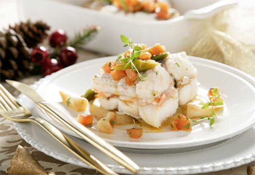

Codorniz Escabechada
Una receta para todo el año, no solo para la temporada de caza. ¡Toma nota y date un homenaje!

Rollito de Lenguado
Esta receta esta elaborada con uno de los pescados más saludables de nuestra gastronomía, el lenguado.

Merluza Rellena de Gambas
Una receta original e ideal para estas fiestas navideñas.
Merluza Rellena de Gambas
Una receta original e ideal para estas fiestas navideñas.

Salmonetes a la plancha sobre Risotto de Remolacha
Este delicioso arroz cremoso que se deshace en la boca , de textura untuosa y suave.

Cardo con Crema de Jamón y Champiñones
Un plato ligero y muy sabroso. Perfecto como entrante y con el que seguro sorprenderás.